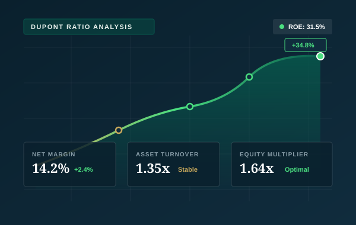

Case Study // 01

Financial Statement & Ratio Analysis
In-depth horizontal, vertical, and DuPont decomposition of corporate financial statements to isolate operational drivers of equity profitability and working capital health.